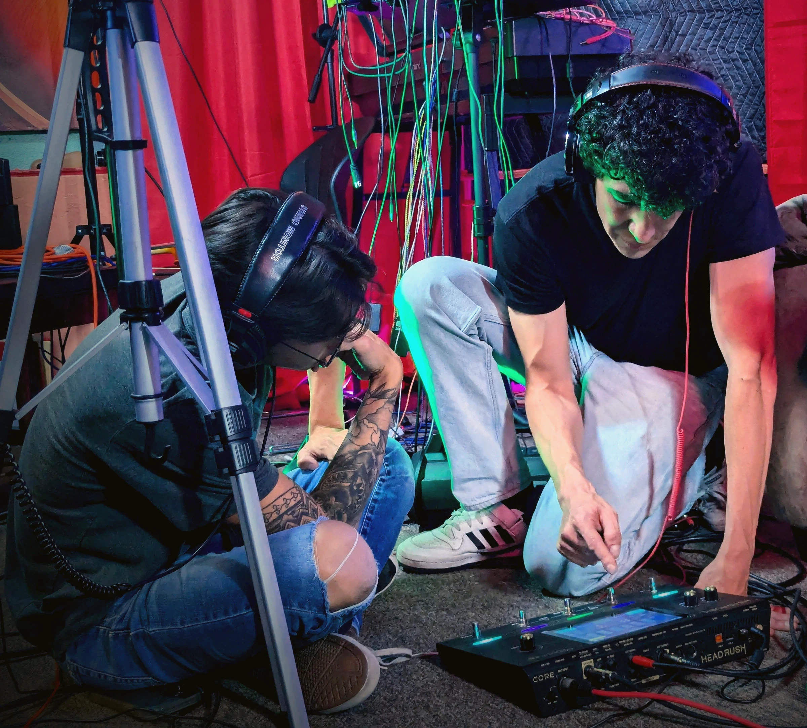
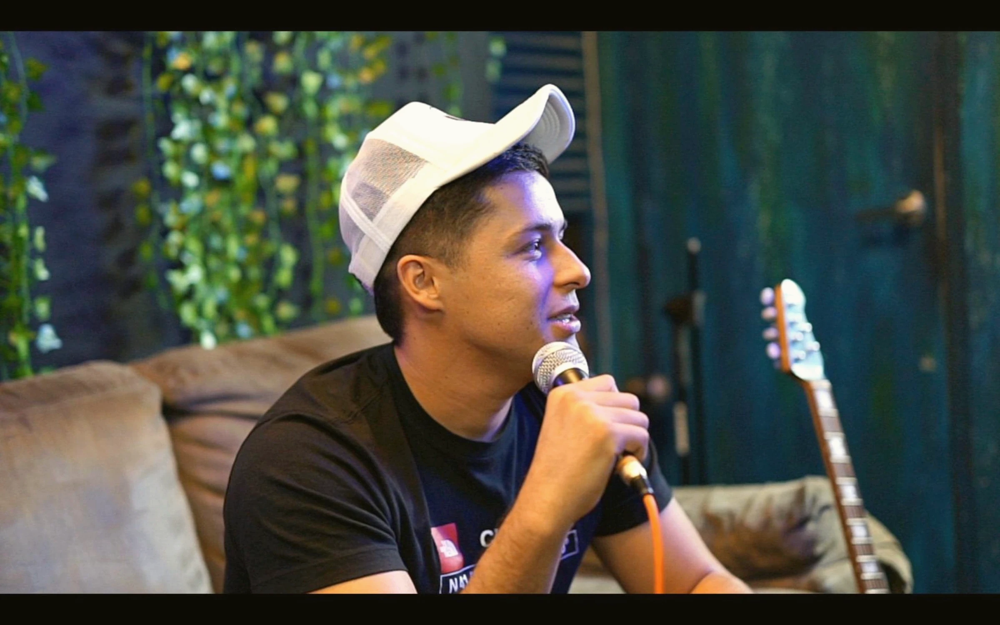
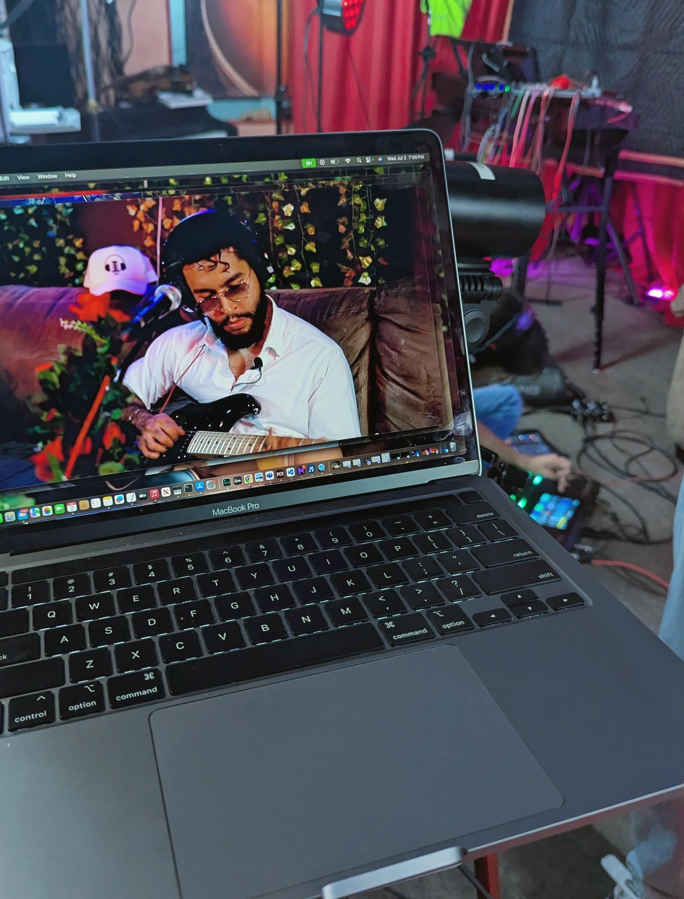
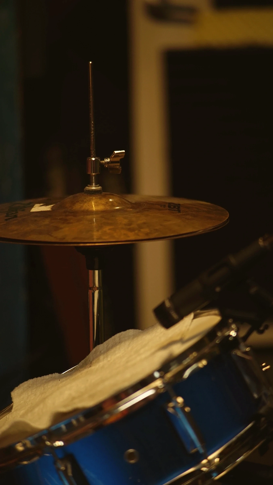
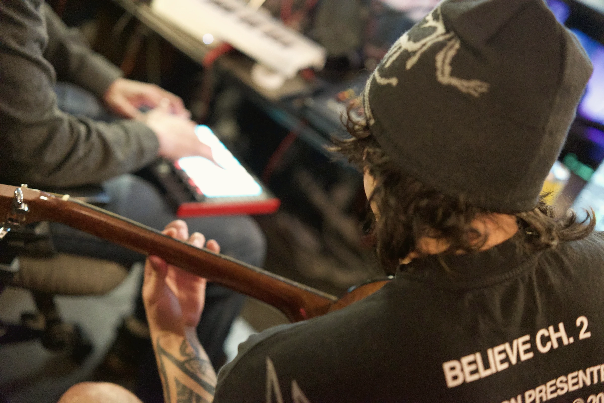

Best uses
Built for the bigger session.
Bands, instrument recording, drum-kit setups, larger projects and teams, and mixing or mastering work with Gavin.

Best uses
Bands, instrument recording, drum-kit setups, larger projects and teams, and mixing or mastering work with Gavin.
The rooms
A spacious acoustically treated vocal booth, an equipment-focused control room, and an instrument room for band and acoustic recording.


Plan your session
Describe the performers, instruments, and project scope so the studio can recommend the right setup.
Ask about Studio A
